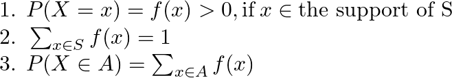
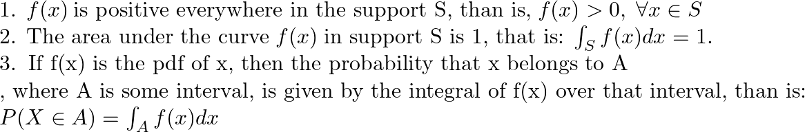
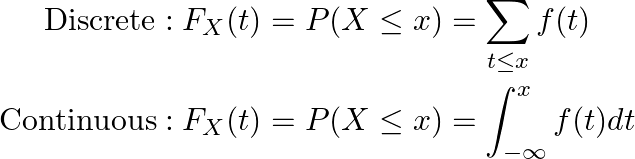
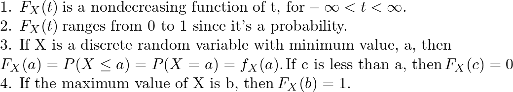

8 Probability
8.1 Misc
- Scoring predictions
Example: Probability of rain (1 = Rain, 0 = No Rain) scoring rules: -5 happiness for being rained on, -1 happiness for having to carry an umbrella Your chance of carrying an umbrella is equal to the forecast probability of rain. Your job is now to maximize your happiness by choosing a weatherperson
.png)
- Forecaster total score: 3 × (−1) + 7 × (−0.6) = -7.2 happiness
- Newcomer total score: 3 x 5 + 7 x 0 = -15 happiness
- This looks like an expected value — sum ( forecasted_probabilityevent * cost (or reward))
8.2 Fundamentals
Addition Rule
- Mutually Exclusive: \(P(A \;\text{or}\; B) = P(A) + P(B)\)
- i.e. Events that cannot occur simultaneously
- Example: What’s the probability of a batter either hitting a single or a double?
- Not Mutually Exclusive: \(P(A \;\text{or}\; B) = P(A) + P(B) - P(A \;\text{and}\; B)\)
- i.e. Events that can occur simultaneously
- Example: What’s the probability of drawing a King (A) or a Club (B)
- The formula for P(A and B) depends on whether A and B are dependent or independent evenst
- Example:
- Independent:
- A: It rains today; B: The stock market goes up today
- Dependent:
- A: High Icecream sales; B: High Temperature
- Independent:
- Example:
- Mutually Exclusive: \(P(A \;\text{or}\; B) = P(A) + P(B)\)
Complementary Rule
Conditional Rule
Multiplication Rule
Independent Events: \(P(A \;\text{and}\; B) = P(A) \times P(B)\)
- Example: What’s the probability of a pitcher striking out two batters in a row?
Dependent Events: \(P(A \;\text{and}\; B) = P(A) \times P(B|A)\)
- Example: What’s the probability of a batter getting a single and then stealing 2nd base?
Permutations
Packages: {combinat}
Definition: A permutation of n elements is any arrangement of those n elements in a definite order. There are n factorial (n!) ways to arrange n elements. Note the bold: order matters!
The number of permutations of n things taken r-at-a-time is defined as the number of r-tuples that can be taken from n different elements and is equal to the following equation:
Example Question: How many permutations does a license plate have with 6 digits?
Example:
# number of permutations choose(3, 2) * factorial(2) #> [1] 6
Combinations
Packages: {combinat}
Definition: The number of ways to choose r out of n objects where order doesn’t matter.
The number of combinations of n things taken r-at-a-time is defined as the number of subsets with r elements of a set with n elements and is equal to the following equation:
Example Question: How many ways can you draw 6 cards from a deck of 52 cards?
Example:
# number of combinations choose(3, 2) #> [1] 3 # combinations listed combn(3, 2) #> [,1] [,2] [,3] #> [1,] 1 1 2 #> [2,] 2 3 3
{kind=link}
{kind=link}
{kind=link}
{kind=link}
8.3 Notation
- pmfs use Pr( ) while pdfs use P( ) or p( ) or f( ) (despite when I have written below)
- W ~ Binomial(n,p) is read “the event W is distributed Binomially or assumed to be Binomial with sample size n and probability p.”
- P(B|A) - Conditional probability: meaning the probability of B given that A has occurred (example: Dependent events, P(A and B) –> pick a queen, P(A) = 4/52; given a queen was chosen, pick a jack, P(B|A) = 4/51; multiply)
8.4 Terms
Probability - the number of occurrences of a certain event expressed as a proportion of all events that could occur.
- Example: In our black bag there are three blue balls, but there are ten balls in total, so the probability that you pull out a blue ball is three divided by ten which is 30% or 0.3.
- Convert probability of an event to odds for an event: O = P/(1 — P)
Odds - the number of occurrences of a certain event expressed as a proportion of the number of non-occurrences of that event.
- Example: In our black bag there are three blue balls, but there are seven balls which are not blue, so the odds for drawing a blue ball are 3:7.
- Odds are often expressed as odds for, which in this case would be three divided by seven, which is about 43% or 0.43, or odds against, which would be seven divided by three, which is 233% or 2.33.
- Convert odds for an event to probability: P = O/(1 + O)
Odds Ratio - describes the percent change in odds
Stochastic - no value of a variable is known with certainty. Some values may be more likely than others (probabilistic). Variable gets mapped onto a distribution.
8.5 Functions
Probability Mass Functions (pmf): The probability that discrete random variable, X = a value.
- \(P(X = x) = f(x)\) of a discrete random variable X is a function that satisfies the following properties:
 - (1) says the probability that x is a certain value is > 0 if x is in the support (set of possible values) of S
- (2) says all the probabilities for the supported values add up to 1
- (3) says to determine the probability associated with the event A, you just sum up the probabilities of the x values in A.
- \(P(X = x) = f(x)\) of a discrete random variable X is a function that satisfies the following properties:
Probability Density Function (pdf): The probability that a continuous random variable is within an interval.
- Probability density is the rate of change in cumulative probability. So the probability density can exceed 1, but the area under the density cannot.
- Continuous random variables are uncountably infinite (discrete are countably infinite). Therefore, the probability of X = a value is zero which is why finding the probability of finding the value within in interval is calculated, \(P(a < X < b)\).
- The pdf of a continuous random variable \(X\) with support \(S\) is an integrable function \(f(x)\) satisfying the following:
- Uses of integrals instead of summations
Cumulative Distribution Function (CDF): The probability that a random variable value is less than or equal another value. Also called the distribution function.
Says that \(F\) is the cdf of \(X\) but is a function of \(t\)
The CDF has the following properties:
- (3) says any probability for a value less than the minimum value is zero in the sample space. The other properties are self-explanatory
“Cumulative” because we’re asking, “what’s the probability of value 1 or value 2 or value 3 etc.?” which is the sum of the probabilities.
Simulation of random variable values of a distribution using its cdf (what’s happening when you use rnorm( ))
- Change of Variable Technique
Randomly draw 1000 (or whatever) numbers from \(\mathcal{U}(0,1)\) (i.e. the values of the y-axis of the CDF which are bdd between 0 and 1)
Find the inverse of the distribution’s CDF (solving for \(X\))
Plug the random numbers into the inverse CDF to calculate \(X\) (i.e. the random variable values of the distribution)
.png)
- Fig shows the example where 0.8 is randomly drawn from \(\mathcal{U}(0,1)\) and plugged into the inverse CDF function to obtain x = 8
.png)
- Fig illustrates the Change-of-Variable technique (the mu in y-axis label is a typo, should be a u).
- Taking the inverse of \(Y = u(X)\) yields \(X = v(Y)\)
- Change of Variable Technique
{kind=link}
{kind=link}
{kind=link}
{kind=link}
8.6 Plots
- a Q–Q (quantile-quantile) plot is a probability plot, which is a graphical method for comparing two probability distributions by plotting their quantiles against each other.
- If the two distributions being compared are similar, the points in the Q–Q plot will approximately lie on the line y = x.
- If the distributions are linearly related after one is transformed, the points in the Q–Q plot will approximately lie on a line, but not necessarily on the line y = x
- Using to compare two samples of data can be viewed as a non-parametric approach to comparing their underlying distributions
- Interpretation
- If distribution on y-axis is more dispersed than the distribution on the x-axis, then the line is steeper than y = x.
- If distribution on x-axis is more dispersed than the distribution on the y-axis, then the line is flatter than y = x.
- Arcs or “S” shapes indicate one distribution is more skewed than the other or one of the distributions has heavier tails than the other